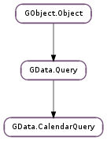

| static | new(q) |
| static | new_with_limits(q, start_min, start_max) |
| get_future_events() | |
| get_max_attendees() | |
| get_order_by() | |
| get_recurrence_expansion_end() | |
| get_recurrence_expansion_start() | |
| get_single_events() | |
| get_sort_order() | |
| get_start_max() | |
| get_start_min() | |
| get_timezone() | |
| set_future_events(future_events) | |
| set_max_attendees(max_attendees) | |
| set_order_by(order_by) | |
| set_recurrence_expansion_end(end) | |
| set_recurrence_expansion_start(start) | |
| set_show_deleted(show_deleted) | |
| set_single_events(single_events) | |
| set_sort_order(sort_order) | |
| set_start_max(start_max) | |
| set_start_min(start_min) | |
| set_timezone(_timezone) | |
| show_deleted() |
| Name | Type | Flags | Description |
|---|---|---|---|
| future-events | bool | r/w | A shortcut to request all events scheduled for the future. |
| max-attendees | int | r/w | Specifies the maximum number of attendees to list for an event. |
| order-by | str | r/w | Specifies order of entries in a feed. |
| recurrence-expansion-end | int | r/w | Specifies end of period to expand recurrences for. |
| recurrence-expansion-start | int | r/w | Specifies start of period to expand recurrences for. |
| show-deleted | bool | r/w | Whether to include deleted/cancelled events in the query feed. |
| single-events | bool | r/w | Indicates whether recurring events should be expanded. |
| sort-order | str | r/w | Specifies direction of sorting. |
| start-max | int | r/w | A timespan such that only events within the timespan are returned. |
| start-min | int | r/w | A timespan such that only events within the timespan are returned. |
| timezone | str | r/w | The current timezone. |
None
| Name | Type | Access |
|---|---|---|
| parent | GData.Query | r |
Bases: GData.Query
All the fields in the GData.CalendarQuery structure are private and should never be accessed directly.
| Parameters: | q (str or None) – a query string, or None |
|---|---|
| Returns: | a new GData.CalendarQuery |
| Return type: | GData.CalendarQuery |
Creates a new GData.CalendarQuery with its GData.Query :q property set to q.
| Parameters: | |
|---|---|
| Returns: | a new GData.CalendarQuery |
| Return type: |
Creates a new GData.CalendarQuery with its GData.Query :q property set to q, and the time limits start_min and start_max applied.
| Returns: | the future events property |
|---|---|
| Return type: | bool |
Gets the GData.CalendarQuery :future-events property.
| Returns: | the maximum number of attendees, or 0 |
|---|---|
| Return type: | int |
Gets the GData.CalendarQuery :max-attendees property. If the property is unset, 0 will be returned.
| Returns: | the order by property, or None if it is unset |
|---|---|
| Return type: | str |
Gets the GData.CalendarQuery :order-by property.
| Returns: | the UNIX timestamp for the recurrence-expansion-end property, or -1 |
|---|---|
| Return type: | int |
Gets the GData.CalendarQuery :recurrence-expansion-end property. If the property is unset, -1 will be returned.
| Returns: | the UNIX timestamp for the recurrence-expansion-start property, or -1 |
|---|---|
| Return type: | int |
Gets the GData.CalendarQuery :recurrence-expansion-start property. If the property is unset, -1 will be returned.
| Returns: | the single events property |
|---|---|
| Return type: | bool |
Gets the GData.CalendarQuery :single-events property.
| Returns: | the sort order property, or None if it is unset |
|---|---|
| Return type: | str |
Gets the GData.CalendarQuery :sort-order property.
| Returns: | the UNIX timestamp for the start-max property, or -1 |
|---|---|
| Return type: | int |
Gets the GData.CalendarQuery :start-max property. If the property is unset, -1 will be returned.
| Returns: | the UNIX timestamp for the start-min property, or -1 |
|---|---|
| Return type: | int |
Gets the GData.CalendarQuery :start-min property. If the property is unset, -1 will be returned.
| Returns: | the timezone property, or None if it is unset |
|---|---|
| Return type: | str |
Gets the GData.CalendarQuery :timezone property.
| Parameters: | future_events (bool) – True to unconditionally show future events, False otherwise |
|---|
Sets the GData.CalendarQuery :future-events property of the GData.CalendarQuery to future_events.
| Parameters: | max_attendees (int) – a new maximum attendee count, or 0 |
|---|
Sets the GData.CalendarQuery :max-attendees property of the GData.CalendarQuery to the new value, max_attendees.
Set max_attendees to 0 to unset the property in the query URI.
| Parameters: | order_by (str or None) – a new order by string, or None |
|---|
Sets the GData.CalendarQuery :order-by property of the GData.CalendarQuery to the new order by string, order_by.
Set order_by to None to unset the property in the query URI.
| Parameters: | end (int) – a new end time, or -1 |
|---|
Sets the GData.CalendarQuery :recurrence-expansion-end property of the GData.CalendarQuery to the new time/date, end.
Set end to -1 to unset the property in the query URI.
| Parameters: | start (int) – a new start time, or -1 |
|---|
Sets the GData.CalendarQuery :recurrence-expansion-start property of the GData.CalendarQuery to the new time/date, start.
Set start to -1 to unset the property in the query URI.
| Parameters: | show_deleted (bool) – True to show deleted events, False otherwise |
|---|
Sets the GData.CalendarQuery :show-deleted property of the GData.CalendarQuery.
| Parameters: | single_events (bool) – True to show recurring events as single events, False otherwise |
|---|
Sets the GData.CalendarQuery :single-events property of the GData.CalendarQuery to single_events.
| Parameters: | sort_order (str or None) – a new sort order string, or None |
|---|
Sets the GData.CalendarQuery :sort-order property of the GData.CalendarQuery to the new sort order string, sort_order.
Set sort_order to None to unset the property in the query URI.
| Parameters: | start_max (int) – a new maximum start time, or -1 |
|---|
Sets the GData.CalendarQuery :start-max property of the GData.CalendarQuery to the new time/date, start_max.
Set start_max to -1 to unset the property in the query URI.
| Parameters: | start_min (int) – a new minimum start time, or -1 |
|---|
Sets the GData.CalendarQuery :start-min property of the GData.CalendarQuery to the new time/date, start_min.
Set start_min to -1 to unset the property in the query URI.
| Parameters: | _timezone (str or None) – a new timezone string, or None |
|---|
Sets the GData.CalendarQuery :timezone property of the GData.CalendarQuery to the new timezone string, timezone.
Set timezone to None to unset the property in the query URI.
| Returns: | True if deleted/cancelled events should be shown, False otherwise |
|---|---|
| Return type: | bool |
Gets the GData.CalendarQuery :show-deleted property.